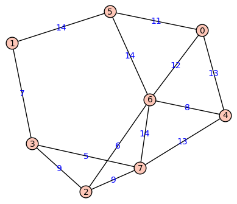

Our next topic in graph theory has many applications, some of which are being investigated in various application projects. That topic is weighted graphs, which are graphs whose edges have numerical values attached that might represent distances, costs, and so on. Weighted graphs are used to model networks in which traveling from one node to another might incur different “costs” depending on the nodes. An associated problem of great importance is: Given a weighted graph and a starting node, what is the path to each of the other vertices that has the least total cost? We’ll solve this problem using the very powerful Dijkstra’s Algorithm.
NOTE: This material is NOT located in your book. See the Resources section below for places to go to learn about this topic.
Basic objectives: Each student is responsible for gaining proficiency with each of these tasks prior to engaging in class discussions, through the use of the learning resources (below) and through the working of exercises (also below). Note that important new terminology is given in italics.
Advanced objectives: The following objectives are the subject of class discussion and further work; they should be mastered by each student during and following class discussions.
NOTE: Since the information in this unit does not come from your book, it’s especially important to complete all the reading and all the video viewing and to ask questions (in person, by email, etc.) if you have any.
Reading:
Video:
The following exercises are to be done during and following your reading and viewing of the resources. Work these out on paper and then enter the responses into the appropriate submission form (see Submission Instructions) by the deadline. You will receive a mark of Pass if each item response shows a good-faith effort to be right and is submitted prior to the deadline.
Consider the following weighted graph:

Submit your responses using the form at this link: http://bit.ly/1M3mI38